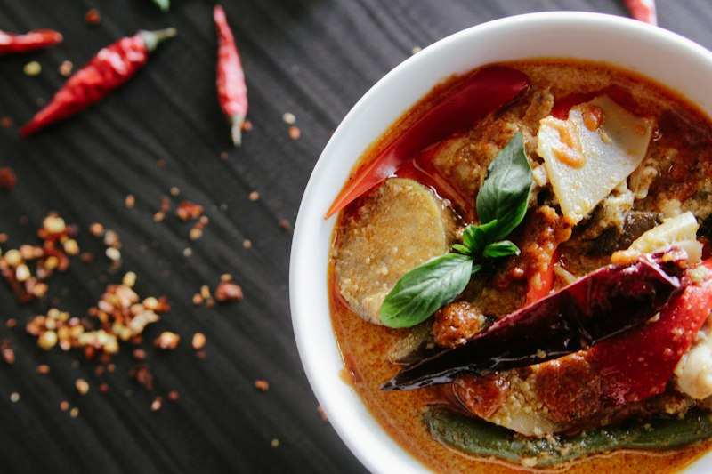

Thai Green Curry
Vibrant and aromatic curry with vegetables and coconut milk

Prep Time
15 min
Cook Time
25 min
Servings
4 people
Vibrant and aromatic curry with vegetables and coconut milk
Adjust spice level by using more or less curry paste
Add vegetables in stages based on cooking time needed
Fresh Thai basil is essential for authentic flavor
Use full-fat coconut milk for richest, creamiest sauce